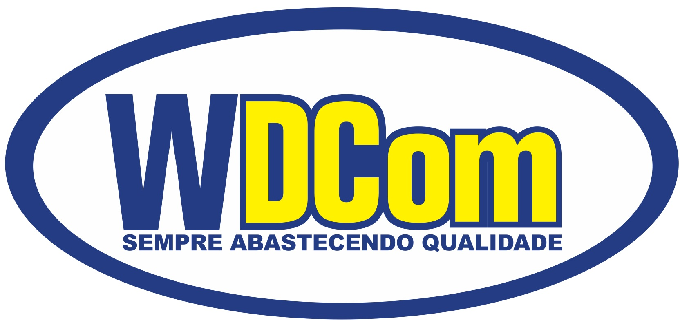
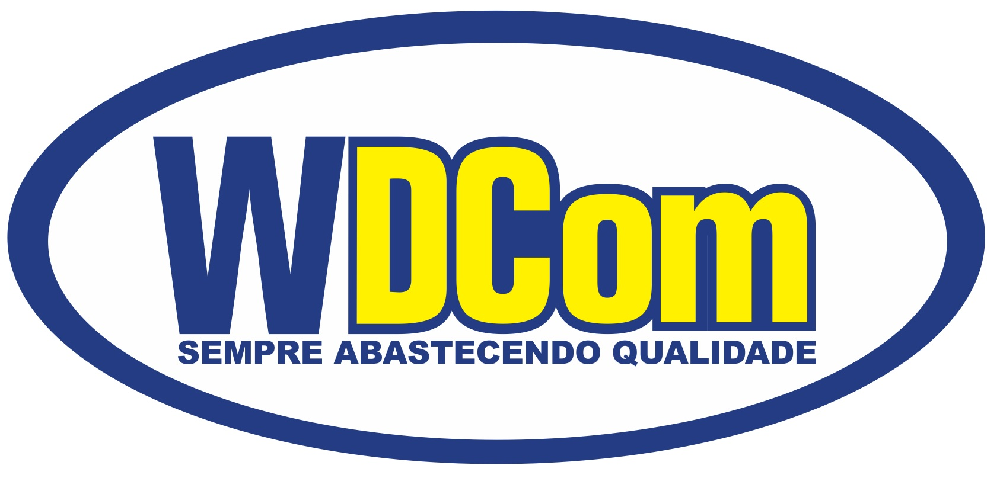
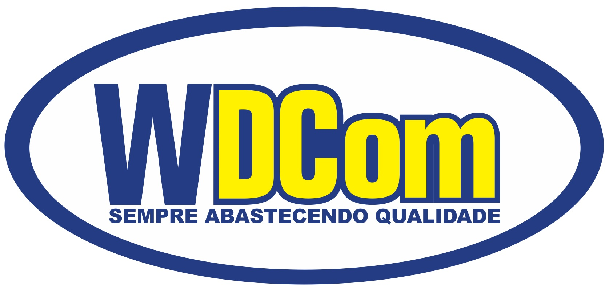
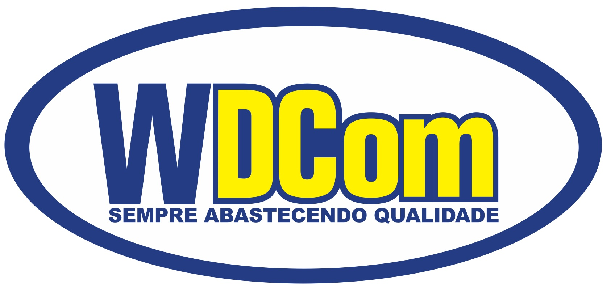

Posto de Revenda de Combustiveis da marca WDCOM: Todos os produtos com a marca WDCom são originalmente retirados na PETROBRAS – Petróleo Brasileiro S/A, exceto os Etanóis que são retirados diretamente das usinas produtoras. A empresa é extremamente rígida na seleção de seus fornecedores para garantir aos clientes a melhor qualidade de produto que o mercado dispõe.
Gasolina Comum:
Através da mistura de Etanol Anidro Carburante e Gasolina A
(gasolina pura) chega-se a Gasolina Comum que é comercializada em todo o país.
A WDCom é considerada uma das melhores gasolinas do mercado
Gasolina Aditivada
Difere da gasolina comum pela presença de aditivo que
melhora manutenção do sistema de alimentação de combustível,
dando maior durabilidade à troca de filtros e limpeza de
bicos injetores. Na WDCom a partir de 2012 passou-se a utilizar
um corante de tonalidade VERDE para diferenciá-lo da gasolina comum.
Etanol
Difere do S500 normal por possuir aditivos em sua formulação
possibilitando uma melhor manutenção do sistema de alimentação
de combustível, dando maior durabilidade à troca de filtros e
limpeza de bicos injetores.
Oleo Diesel S500
Difere do S500 normal por possuir aditivos em sua formulação
possibilitando uma melhor manutenção do sistema de alimentação
de combustível, dando maior durabilidade à troca de filtros e
limpeza de bicos injetores.
Oleo Diesel S10
É a nova geração de óleo diesel. É um grande avanço na
preservação do meio ambiente por possuir em sua
composição apenas 10 ppm de enxofre. Produto utilizado
para todos os novos motores fabricados a partir de 2012.